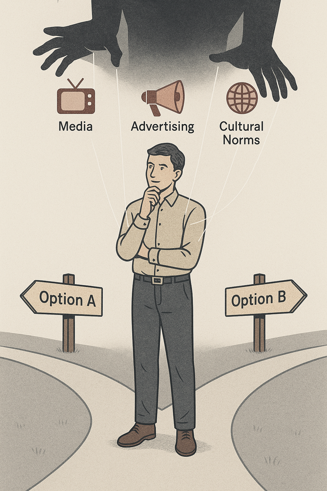

記録3：自由意志の限界
我々は、自分で考え、自分で選んでいると信じている。しかし本当にそうだろうか？

自由意志という幻想
我々は、日々の選択を「自分の意志」で決めていると信じている。 何を食べるか、どこへ行くか、誰と付き合うか――これらは一見、私たち自身が主導しているように見える。
しかし、近年の脳科学研究は、その信念を揺るがす結果を示している。 「自由意志は幻想である」 という衝撃的な結論が、次々と明らかになってきているのだ。
リベット実験の示唆
1980年代、神経科学者ベンジャミン・リベットは有名な実験を行った。 被験者が手を動かすという単純な行為において、脳がその動作を開始する信号は、 本人が「動かそう」と意識する約0.3秒前に発生していたのである。
「我々が『決断した』と感じる瞬間には、既に脳はその行動を準備している。」
――ベンジャミン・リベット（Brain, 1983）
この結果は何を意味するのか？ それは、私たちが「自発的な選択」だと思い込んでいるものが、 実際には無意識のプロセスによって決定されている可能性を示唆している。
操られる私たち
企業のマーケティング、政治のプロパガンダ、教育、宗教―― あらゆるシステムは、この「無意識の隙間」に巧妙に入り込み、私たちの行動を制御する。 君が「これが自分の意思だ」と信じている選択は、果たしてどこまで純粋なのだろうか？
真の自由とは、 この世界の構造と自分自身の限界を徹底的に理解したうえで、なおも自らの道を選ぶことだ。
君は、すでにその扉の前に立っている。 次に進む覚悟があるか？
※1: Benjamin Libet et al., “Time of Conscious Intention to Act”, Brain, 1983.
※2: Daniel M. Wegner, Illusion of Conscious Will, 2002.
※3: 図「自由意志と脳科学の関係図」Takashi.K
last updated: 3:33 AM